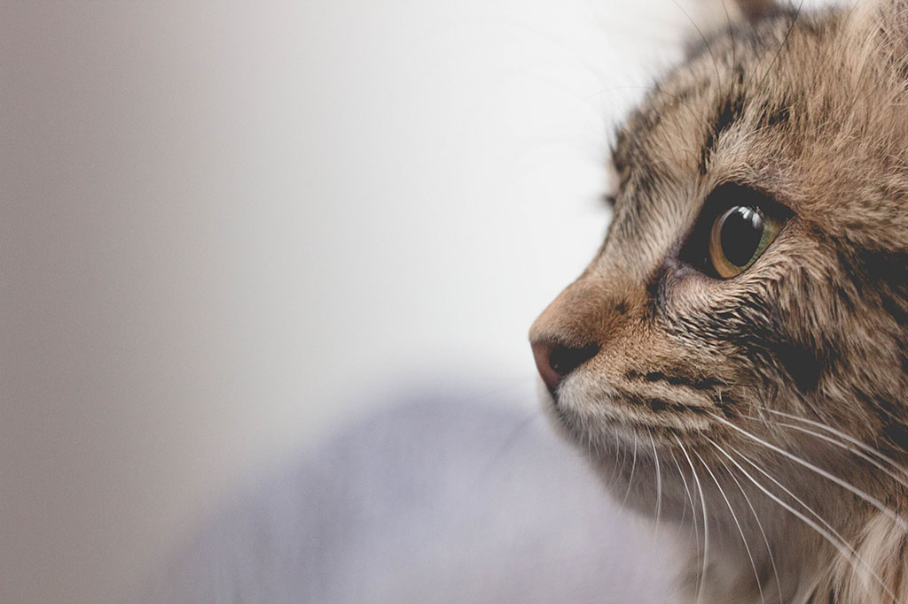
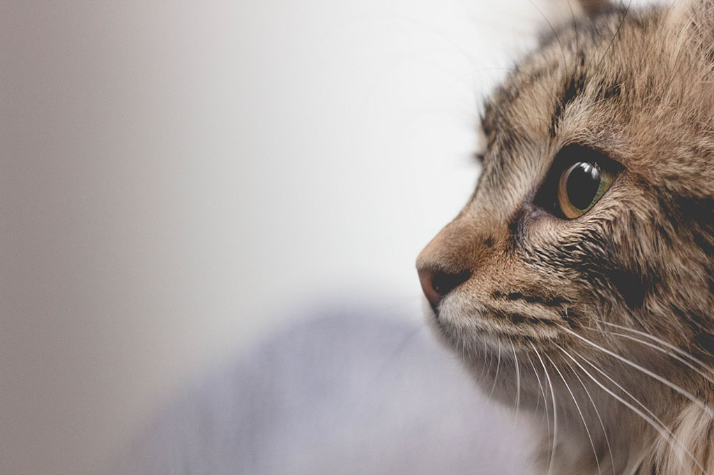

Welcome to this simple styled website
At this simple styled website, we believe making website is simple and we believe we can make simple websites with style.
Simpler than simpler.
At this simple styled website, we believe making website is simple and we believe we can make simple websites with style.
